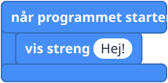
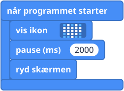
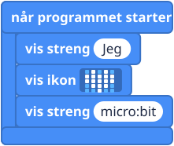

Hvad er det?
micro:bit'en har kun 25 lys, så et helt ord kan ikke være der på én gang. Bogstaverne glider forbi ét ad gangen, ligesom nyhedsteksten, der kører nederst på en tv-skærm. I kode hedder tekst en streng (string): tænk på bogstaver trukket på en snor, som perler. Tal glider også forbi.
Blokkene
Alle fire ligger i gruppen Grundlæggende (Basic). Kan du ikke se ryd skærmen (clear screen), så klik på "... mere" (... more) nederst i gruppen.


Små eksempler



Prøv det her
- Vis dit navn.
- Vis en hel sætning. Hvor lang tid tager det, før hele sætningen er kørt forbi?
- Vis et hjerte i 1 sekund, så dit navn, og ryd så skærmen.
- Sværere: tæl "3", "2", "1" med vis nummer og pause.
Typiske fejl
- Der sker ingenting. Blokken ligger løst i arbejdsområdet. Klik den ind i når programmet starter (on start).
- Ordene kommer i forkert rækkefølge. Blokkene kører oppefra og ned. Træk i dem, så de bytter plads.
- Den viser 0. Der står stadig 0 i talboksen. Klik på den, og skriv dit tal.
- Jeg nåede ikke at se teksten. Tryk på reset-knappen på bagsiden for at køre programmet igen.
Koden skrevet som tekst
JavaScript: basic.showString("Hej!")
basic.showNumber(42)
basic.pause(1000)
basic.clearScreen()
Python: basic.show_string("Hej!")
basic.show_number(42)
basic.pause(1000)
basic.clear_screen()
V1 og V2
Blokkene virker på samme måde på begge.
Lærernoter
- Tid: 20 til 30 minutter.
- Det lærer de: at blokke kører i rækkefølge, tekst (strenge) og tal, og millisekunder.
- Til senere: en streng som "5" og tallet 5 ser ens ud på lysene, men de er forskellige slags værdier. Det får betydning, når variabler kommer på banen.
- Billederne af blokkene er forenklede tegninger. Tjek de rigtige blokke i MakeCode.